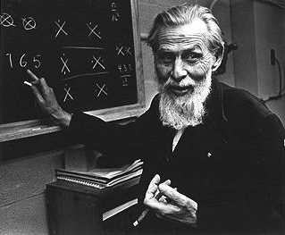
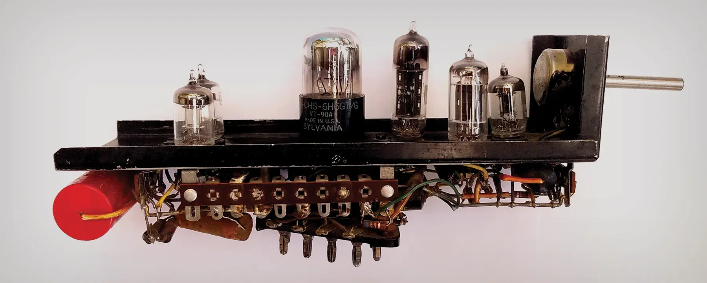
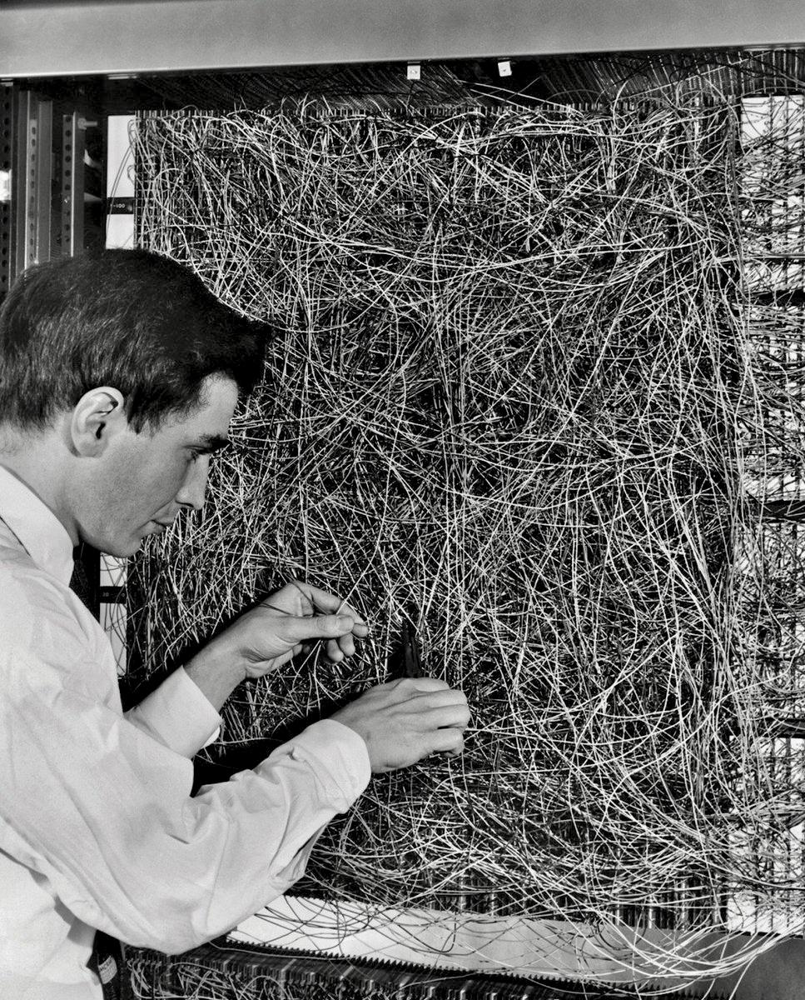
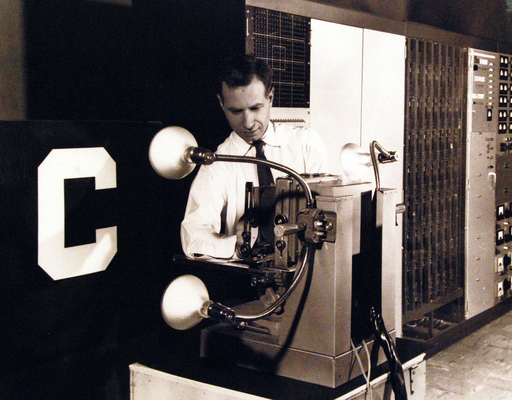

Neuronale Netze, von Hand gebaut
Wird geladen…
function UND(a, b): wenn a == 1 und b == 1: y = 1 sonst: y = 0 return y

McCulloch & Pitts (1943): vereinfachtes Neuron → logische Operationen.

SNARC (1951), Minsky & Edmonds: 1. physisches Netz · 40 Röhren-Neuronen · simulierte eine Ratte im Labyrinth.


| x | y | z | |
|---|---|---|---|
| innen₁ | 0.20 | 0 | 0 |
| innen₂ | 0 | 0.25 | 0 |
| außen₁ | 0.90 | 0 | 0 |
| außen₂ | 0 | 0.95 | 0 |
Was Sie vorher gesehen haben, war eine vereinfachte Vorstellung, aber im Prinzip richtig.
Sollen wir dem Netz die Kategorie „Auto" beibringen und sind alle unsere Fotos Autos vor blauem Himmel, findet es den blauen Himmel — weil der einfacher zu erkennen ist als das Auto. Das Auto selbst? Kommt ganz hinten dran.